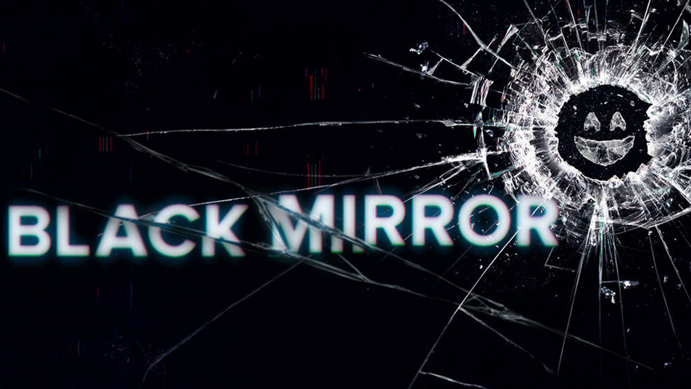

Любимые сериалы

Чёрное зеркало
Британский сериал-анталогия, повествует о том, куда, в конце концов, человечество может завести вмешательство технологий в абсолютно все сферы жизни – от личных воспоминаний до политики. Сериал создан по сценарию Чарли Брукера. Серии не связаны между собой ни сюжетом, ни актёрами, ни временем или местом повествования. По словам Брукера, все сюжеты объединяет лишь сатира на тот образ жизни, что распространён в современном обществе.
Доктор Кто
Культовый британский научно-фантастический телесериал компании «Би-би-си» об инопланетном путешественнике во времени, известном как Доктор. Вместе со своими спутниками он путешествует во времени и пространстве как для спасения целых цивилизаций или отдельных людей, так и для собственного удовольствия. Самый продолжительный научно-фантастический сериал в мире, важная часть массовой культуры Великобритании и многих других стран.
Шерлок
История о Шерлоке Холмсе и докторе Уотсоне в Лондоне начала двадцать первого века успела прославиться не только как одна из самых стильных и интригующих экранизаций рассказов сэра Артура Конан-Дойла, но и как шоу, создатели которого заставляют фанатов изнывать в ожидании новых серий не меньше пары-тройки мучительных лет. Ожидание, впрочем, того стоит.
Восьмое чувство
Американский научно-фантастический драматический телесериал. Группа людей из разных точек мира неожиданно оказываются ментально связанными, теперь им придется найти способ, чтобы выжить, потому что за ними начинают охотиться те, кто видит в них угрозу для этого мира…